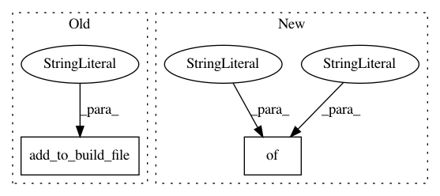

8e564173306e7e9ea05e13289388a9753be6a21a,src/python/pants/backend/codegen/protobuf/protobuf_dependency_inference_test.py,,test_protobuf_mapping,#Any#,86
Before Change
rule_runner.create_file("root1/two_owners/f.proto")
rule_runner.add_to_build_file("root1/two_owners", "protobuf_library()")
rule_runner.create_file("root2/two_owners/f.proto")
rule_runner.add_to_build_file("root2/two_owners", "protobuf_library()")
result = rule_runner.request(ProtobufMapping, [])
assert result == ProtobufMapping(
{
After Change
def test_protobuf_mapping(rule_runner: RuleRunner) -> None:
rule_runner.set_options(["--source-root-patterns=["root1", "root2", "root3"]"])
rule_runner.write_files(
{
// Two proto files belonging to the same target. We should use two file addresses.
"root1/protos/f1.proto": "",
"root1/protos/f2.proto": "",
"root1/protos/BUILD": "protobuf_library()",
// These protos would result in the same stripped file name, so they are ambiguous.
"root1/two_owners/f.proto": "",
"root1/two_owners/BUILD": "protobuf_library()",
"root2/two_owners/f.proto": "",
"root2/two_owners/BUILD": "protobuf_library()",
}
)
result = rule_runner.request(ProtobufMapping, [])
assert result == ProtobufMapping(
mapping=FrozenDict(
In pattern: SUPERPATTERN
Frequency: 3
Non-data size: 2
Instances
Project Name: pantsbuild/pants
Commit Name: 8e564173306e7e9ea05e13289388a9753be6a21a
Time: 2021-04-07
Author: 14852634+Eric-Arellano@users.noreply.github.com
File Name: src/python/pants/backend/codegen/protobuf/protobuf_dependency_inference_test.py
Class Name:
Method Name: test_protobuf_mapping
Project Name: pantsbuild/pants
Commit Name: 6db9355ebc77853f02bc6aded82151375d113f9c
Time: 2021-03-30
Author: 14852634+Eric-Arellano@users.noreply.github.com
File Name: src/python/pants/backend/python/goals/package_pex_binary_integration_test.py
Class Name:
Method Name: test_warn_files_targets
Project Name: pantsbuild/pants
Commit Name: ad9f8480c8e08b95d6c217ec4a126bd93b7f376a
Time: 2015-08-31
Author: john.sirois@gmail.com
File Name: tests/python/pants_test/backend/jvm/targets/test_jvm_binary.py
Class Name: JvmBinaryTest
Method Name: test_manifest_entries